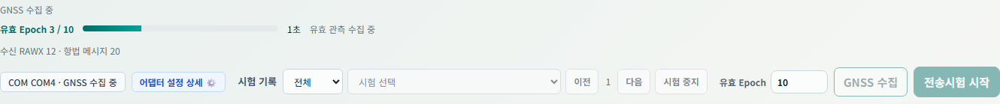
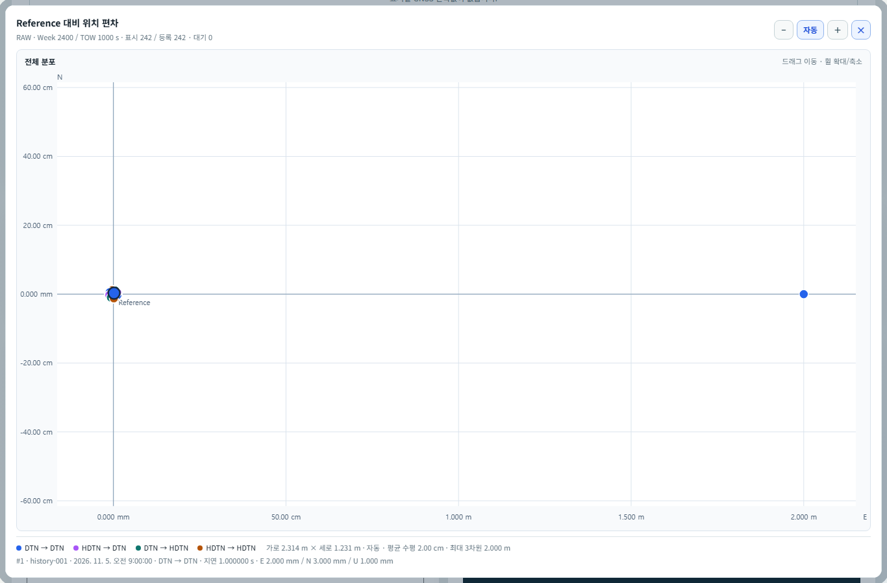
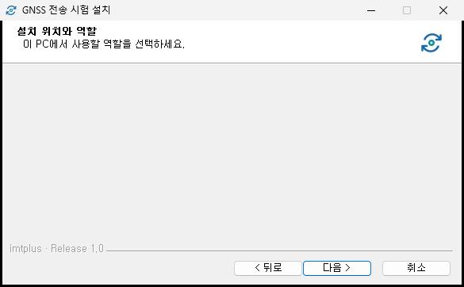
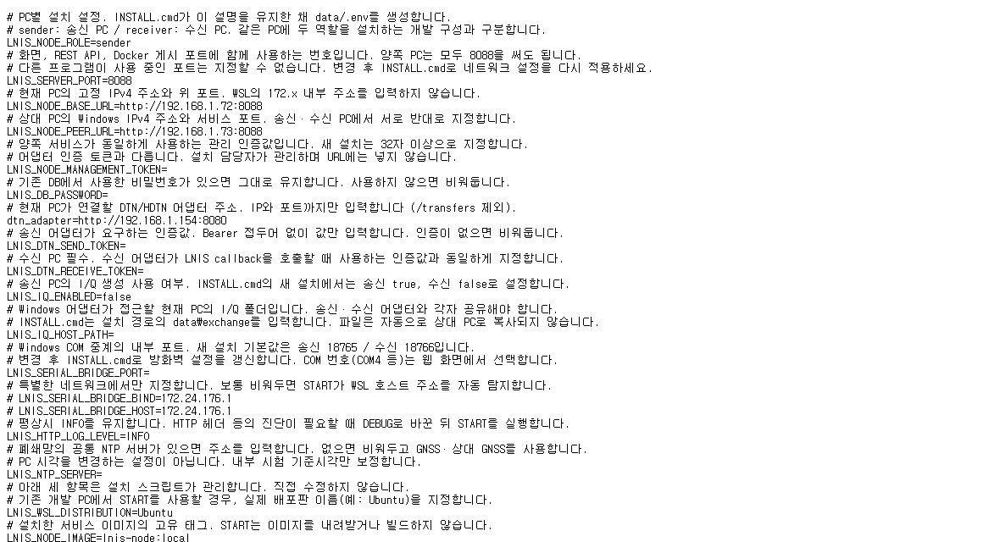

사용 안내 · 01
GNSS 전송 시험 사용자 설명서
GNSS 데이터 전송
지연 반영 PVT 비교
GNSS RAW · AFS Frame · I/Q Sample
사용 안내 · 02
설명서 적용 범위
송신 PC와 수신 PC에서 서비스 시험을 준비하고, DTN/HDTN 어댑터를 통해 전달된 데이터와 PVT 결과를 확인하는 절차입니다. 설치 환경에 따라 주소·포트·직렬 포트는 달라집니다.
| 항목 | 내용 |
|---|---|
| 사용 대상 | GNSS 데이터를 준비하고 DTN/HDTN 전송 결과와 PVT를 확인하는 운영자 |
| 사용 환경 | 송신 PC와 수신 PC. 접속 주소·포트·장비 연결은 설치 환경에 맞게 설정합니다. |
| 웹 설명서 | 목차에서 항목을 선택하거나 본문 끝에서 스크롤해 이동합니다. 검색 결과를 누르면 해당 문장으로 이동합니다. |
| PDF / Word | 같은 HTML 원본에서 생성합니다. PDF는 A4 가로 인쇄용, Word는 검토·편집용입니다. |
| 화면 예시 | 저장된 시험과 장비 연결 화면을 사용했습니다. 예시 좌표를 사용한 그림은 캡션에 표시합니다. |
화면의 ? 버튼으로 해당 기능의 설명서를 열 수 있습니다.
사용 안내 · 03
목차
시작 전 확인 · 04
서비스와 어댑터의 역할
전송용 데이터 구성
상대 어댑터로 전송
지연 반영 PVT 비교
| 연결 | 용도 | 확인 사항 |
|---|---|---|
| 송신 서비스 ↔ 수신 서비스 | 시험 등록, 상태 확인, 비교 자료 요청 | 상대 서비스 주소를 입력합니다. 어댑터 주소와 구분합니다. |
| 각 서비스 → 연결된 어댑터 | 전송 요청 및 연결 상태 확인 | 각 PC가 연결할 어댑터의 IP·포트를 입력합니다. |
| I/Q 공유 폴더 | 어댑터가 .bin 파일을 읽고 전달 | JSON에는 경로 등 파일 정보를 전달합니다. 경로만 맞아도 실제 파일 권한·공유 상태가 별도로 필요합니다. |
| 수신 결과 확인 | testId로 해당 시험에 결과 연결 | 송수신 서비스에서 같은 시험 ID인지 확인합니다. 도착 순서만으로 시험을 구분하지 않습니다. |
시작 전 확인 · 05
접속과 시험 전 준비
| 화면 | 접속 주소 형식 |
|---|---|
| 송신 시험 | http://송신-PC-IP:서비스-포트/lnis/dtntest/sender |
| 수신 시험 | http://수신-PC-IP:서비스-포트/lnis/dtntest/receiver |
| 사용자 설명서 | http://해당-PC-IP:서비스-포트/user-manual/ |
| 구조·동작 안내 | http://해당-PC-IP:서비스-포트/dtn-intro |
| 데이터 관리 · 관리자 | http://해당-PC-IP:서비스-포트/lnis/data-manager |
- 각 PC의 서비스를 기동한 뒤 브라우저로 접속합니다. 루트 주소(/)에 접속하면 설정된 송신·수신 역할 화면으로 이동합니다.
- 양쪽 서비스 연결 상태와 각 어댑터의 연결 상태를 확인합니다.
- GNSS 입력 파일 또는 직렬 포트를 준비합니다. PVT 비교에는 계산 가능한 GPS L1 C/A 관측과 선행 항법정보가 필요합니다.
- 지연 비교 전 양쪽 시험 기준시각을 확인합니다. I/Q 시험은 공유 폴더·여유 저장 공간·I/Q 사용 설정도 확인합니다.
화면의 주소와 포트는 예시입니다. 설치 담당자가 안내한 주소로 접속하세요.
기본 실행 순서 · 06
빠른 실행 · 파일 입력으로 첫 시험
- 송신 화면의 설정에서 시험 유형과 전송 경로를 선택합니다.
- 상대 수신 서비스와 DTN 어댑터 서버 주소를 확인합니다. 필요한 경우 저장·적용 후 연결 확인을 실행합니다.
- UBX / GRAW 파일에서 파일을 선택하고 파일 적용을 누릅니다. 파일 적용 완료 및 PVT 계산 상태를 확인합니다.
- 설정을 닫고 상단의 다음 전송 요약을 확인합니다. I/Q는 먼저 90초 I/Q 생성 또는 저장된 파일 선택을 완료합니다.
- 전송시험 시작을 누릅니다. 생성된 시험 ID와 어댑터 접수 결과를 확인합니다.
- 수신 화면에서 같은 시험을 선택하고 시험 등록 → 번들 수신 → 복원·PVT 계산 상태를 확인합니다.
- 데이터 일치 여부, PVT 비교 가능 여부, 지연·시계오차·위치·속도 차이를 확인하고 로그와 JSON을 다운로드합니다.
시작 버튼이 비활성화되어 있으면 버튼 위의 준비 조건과 상단 메시지를 확인하세요.
송신 화면 · 07
송신 화면에서 구분할 영역


| 영역 | 확인 내용 |
|---|---|
| 연결 상태 / 기준시각 | 송수신 처리기, 어댑터, 시험 상태, 서비스 내부 기준시각과 보정 상태 |
| 다음 전송 | 앞으로 시작할 시험 유형·경로입니다. 클릭하면 설정을 엽니다. |
| 시험 기록 | 선택한 과거 시험의 관측값·PVT·원문·로그를 조회합니다. 다음 시험 설정과 별개입니다. |
| 어댑터 설정 상세 | 선택한 시험을 시작할 때 어댑터에 보낸 설정입니다. |
새로고침하면 AFS Frame이 선택됩니다. 다른 유형은 직접 선택하거나 프리셋을 불러오세요.
송신 설정 · 08
설정 열기와 적용 시점

- 우측 하단 설정 또는 다음 전송을 누릅니다.
- GNSS RAW / AFS Frame / I/Q Sample 중 유형을 선택합니다.
- 송신 엔진 → 수신 엔진 순서로 경로를 선택합니다.
- 경로에 사용되는 DTN·HDTN 설정을 확인하고 닫기 또는 Esc로 돌아옵니다.
| 항목 | 적용 |
|---|---|
| 유형·경로 | 다음 시험 요청에 포함됩니다. 기존 시험 조건을 바꾸지 않습니다. |
| DTN/HDTN 값 | 유효한 입력은 해당 브라우저에 자동 저장됩니다. |
| 프리셋 | 이 PC의 서버에 시험 조건을 저장합니다. |
| 연결 주소 | 주소 항목별 저장·적용을 사용합니다. 프리셋에 포함되지 않습니다. |
수집·전송 준비 중에는 일부 설정을 바꿀 수 없습니다. 수신 대기 중에는 다음 시험을 준비할 수 있습니다.
송신 설정 · 09
시험 유형 선택
| 시험 유형 | 어댑터로 전달하는 계산 입력 | 수신 처리 | 선택 기준 |
|---|---|---|---|
| GNSS RAW | 의사거리를 가상 송신 시각으로 치환한 1 Epoch JSON | 변환 RAW 해석 → 의사거리 재계산 → PVT | 프레임·RF 처리 없이 데이터 전송과 공통 지연 계산을 확인할 때 |
| AFS Frame | GPS 위성별 6,000-bit AFS 프레임을 포함한 JSON | AFS 복호 → 입력 복원 → 의사거리 재계산 → PVT | 프레임 구성·복원까지 포함해 시험할 때 |
| I/Q Sample | I/Q 파일 경로·해시 등 manifest JSON과 별도 .bin 파일 | 파일 검증 → RF 추적·프레임 복호 → 공통 지연 PVT | 신호 생성·추적·복호 경로까지 포함할 때 |
모든 유형에서 지연 반영 PVT를 계산합니다. GNSS RAW는 선택한 Epoch의 계산 입력을 JSON으로 전송합니다.

AFS Frame의 내부 유형명은 AFS_METADATA입니다. I/Q도 같은 프레임 구성을 사용하며 위성별 PRN 신호를 생성합니다.
송신 설정 · 10
전송 경로와 연결 주소
| 선택 경로 | 설정 탭의 적용 대상 |
|---|---|
| DTN → HDTN | DTN: 송신 / HDTN: 수신 |
| DTN → DTN | DTN: 송·수신 |
| HDTN → DTN | HDTN: 송신 / DTN: 수신 |
| HDTN → HDTN | HDTN: 송·수신 |
주소 입력 순서
- 수신 서비스의 IP와 서비스 포트를 입력하고 저장·적용합니다.
- DTN 어댑터 서버 주소에
http://어댑터-IP:포트형식으로 입력합니다. - 각 연결 확인 결과를 구분합니다. 서비스 간 연결 성공과 어댑터 연결 성공은 별개입니다.
어댑터 주소는 기본값을 환경 설정에서 읽고, 화면에서 저장한 주소를 해당 브라우저에 적용합니다. 송신 PC와 수신 PC가 서로 다른 어댑터를 사용하면 각 화면에 각자의 주소를 설정합니다.
송신 설정 · 11
어댑터 연결 확인
| 표시 | 의미 | 다음 조치 |
|---|---|---|
| 정상연결 · 녹색 | health 응답의 status가 ready | 어댑터가 전송 요청을 받을 수 있는 상태입니다. |
| 시험대기 · 노란색 | health 응답의 status가 busy | 어댑터 작업 상태를 확인하고 필요하면 대기합니다. |
| 연결실패 · 빨간색 | 응답 없음, 연결 오류 등 정상 상태를 확인하지 못함 | IP·포트·어댑터 실행·방화벽·응답 내용을 확인합니다. |
화면에서 약 10초 간격으로 상태를 요청합니다. 연결 확인은 수동 재조회입니다. 송신 설정의 상세 보기에는 요청 주소·응답 상태·처리 시간·마지막 확인 및 개발자 JSON 원문이 표시됩니다. 수신 화면은 간단한 상태 표시를 제공합니다.
연결 확인은 송신 /sender/health, 수신 /receiver/health를 사용합니다. 표시된 ms는 연결 확인 응답 시간입니다.
송신 설정 · 12
프리셋 저장·불러오기·수정

- 시험 유형·전송 경로·DTN/HDTN 값을 먼저 설정합니다.
- 설정 저장하기를 누르고 40자 이내 이름을 입력해 저장합니다. 최대 5개입니다.
- 목록에서 프리셋을 선택하고 불러오기를 누릅니다. 다음 전송 요약과 각 값을 확인합니다.
- 값을 수정한 후 변경 저장으로 선택한 프리셋을 갱신합니다.
- 관리에서 이름 변경 또는 삭제를 수행합니다. 다른 화면에서 수정되었다는 메시지가 나오면 새로고침 후 다시 확인합니다.
| 저장 대상 | 포함 여부 |
|---|---|
| 시험 유형 / 송수신 엔진 / GPS 계산 대상 / DTN·HDTN 파라미터 | 포함 |
| GNSS 입력 파일 / 저장된 I/Q 선택 / COM 연결 상태 | 미포함 · 사용 시 별도 준비 |
| 상대 서비스·어댑터 주소 / 인증 토큰 / 시험 이력 | 미포함 |
프리셋은 송신 서비스에 저장됩니다. 브라우저에 남는 최근 입력값과는 별도로 관리합니다.
송신 설정 · 13
HDTN 파라미터

| 입력 항목 / JSON 키 | 초기 기본값 | 의미 |
|---|---|---|
| 최대 동시 번들 수 / maxNumberOfBundlesInPipeline | 50 개 | 동시에 유지할 번들 수의 요청 한도 |
| 최대 동시 번들 용량 / maxSumOfBundleBytesInPipeline | 3,000,000,000 Bytes | 파이프라인 누적 바이트 한도 |
| 최대 번들 크기 / maxBundleSizeBytes | 3,000,000,000 Bytes | 단일 번들 크기 관련 요청값 |
| TCPCL 세그먼트 크기 / tcpclMaxSegmentSizeBytes | 200,000 Bytes | TCPCL 세그먼트 크기 |
| 저장 공간 부족 시 대기 / neighborDepletedStorageDelaySeconds | 10 초 | 상대 저장 공간 부족 시 대기 요청 |
| 우선순위 / enforceBundlePriority | 사용 안 함 · false | 번들 우선순위 적용 요청 |
| 삭제 정책 / storageDeletionPolicy | never | 자동 삭제 안 함 요청 |
표는 초기 기본값입니다. 실제 전송에는 화면에서 적용한 설정이 사용됩니다.
송신 설정 · 14
HDTN 고급 설정과 입력 제한

| 항목 | 초기 기본값 | 용도 |
|---|---|---|
| 전체 저장 용량 / totalStorageCapacityBytes | 8,589,934,592 Bytes | 라우터 저장 용량 요청 |
| ACS 전송 주기 / acsSendPeriodMilliseconds | 1,000 ms | 집계 보관 신호의 전송 주기 요청 |
- 경로에 HDTN이 포함되는지 확인하고 HDTN 설정 탭을 엽니다.
- 항목의 ⓘ에 마우스를 올려 설명을 확인합니다. 값은 정수로 입력합니다.
- 기본 상태로 복원하려면 전체 기본값을 누릅니다. 고급 항목도 함께 초기화됩니다.
- 전송 후 어댑터 설정 상세에서 실제 요청에 포함된 값을 확인합니다.
숫자는 양의 정수, 혼잡 대기 시간은 0 이상으로 입력합니다. 메모리·저장 용량은 라우터 PC의 사양에 맞추세요.
삭제 정책은 never / on_forward / on_delivery / DELETE_AFTER_FORWARDING 중에서 선택합니다. 적용 결과는 어댑터·라우터에서 확인합니다.
송신 설정 · 15
DTN(ION) 파라미터

| 입력 항목 / JSON 키 | 초기 기본값 | 용도 |
|---|---|---|
| SDR 힙 / sdrHeapSizeBytes | 3,500,000,000 Bytes | SDR 저장 영역 크기 요청 |
| SDR 작업 메모리 / sdrWorkingMemorySizeBytes | 350,000,000 Bytes | 작업 메모리 크기 요청 |
| SDR 임시 모드 / sdrTransientMode | 디스크 기반 · false | 일시적 메모리 운용 여부 |
| 최대 번들 / maxBundleSizeBytes | 3,000,000,000 Bytes | 번들 크기 관련 요청값 |
| 접촉 전송 속도 / contactRateBytesPerSec | 125,000,000 Bytes/s | 접촉 구간의 전송률 요청 |
| 최대 생성 / 최대 소비 속도 | 각 100,000,000 Bytes/s | 생성·소비 전송률 요청 |
| TCPCL 세그먼트 / tcpclMaxSegmentSizeBytes | 20,000 Bytes | 세그먼트 크기 |
| 라우팅 모드 / routingMode | StaticPlan | 라우팅 모드 문자열 |
정수 항목에는 양수를 입력합니다. 해당 경로에서 사용하는 엔진의 설정만 전송합니다.
GNSS 입력 · 16
UBX / GRAW 파일 적용

- 송신 설정에서 UBX / GRAW 파일을 선택합니다.
- GNSS 파일에서 .ubx 또는 .graw 파일을 선택합니다.
- 파일 적용을 누르고 적용 상태가 완료될 때까지 기다립니다.
- 설정을 닫고 관측 시점, PVT 계산 상태, GPS L1 관측·항법정보 수를 확인합니다.
| 표시 | 의미 |
|---|---|
| 파일 적용 상태 | 파일 업로드와 입력 검증 진행률입니다. |
| GNSS 기준시간 | 선택한 RAWX Epoch의 GPS Week / TOW입니다. 파일 생성 시각·PC 시각과 다릅니다. |
| 관측 시점 | 지연 시험에 사용할 유효한 첫 Epoch를 자동 선택합니다. 화면의 시점 선택으로 관측 자료를 확인합니다. |
| 파일 수집 범위 | 입력 파일에는 여러 Epoch와 여러 위성군이 있을 수 있습니다. 시험 계산 입력은 선택된 1 Epoch와 필요한 선행 정보로 구성됩니다. |
GNSS 입력 · 17
COM 포트 연결과 장비 설정

- u-center 등 다른 프로그램이 같은 COM 포트를 점유하고 있으면 연결을 해제합니다.
- COM 포트 → 포트 조회에서 장비 포트를 선택합니다.
- 장비 출력 속도에 맞는 통신 속도를 선택합니다. 화면 초기값은 38400 baud입니다.
- 연결을 눌러 선택한 COM 포트를 연결합니다.
- 연결 상태와 시간 수신 상태를 각각 확인합니다. 수집은 별도 GNSS 수집으로 시작합니다.
| 항목 | 의미 |
|---|---|
| 연결됨 / 시간 미확인 | 포트는 연결됐지만 유효한 GNSS 시간을 아직 확보하지 못했을 수 있습니다. |
| 포트 없음 | 장치 인식, Windows 직렬 브릿지, COM 점유 상태 및 설치 설정을 확인합니다. |
GNSS 입력 · 18
GNSS 수집과 UBX 다운로드
- 송신 설정의 COM 포트에서 연결한 뒤 같은 영역의 유효 Epoch 개수를 입력합니다. 기본 10개, 범위 1~50개입니다.
- GNSS 수집을 누릅니다. 위치·속도 PVT가 모두 유효한 Epoch만 집계하며, 지정 개수를 모으면 자동 종료합니다.
- 진행률·경과 시간과 RAWX·항법정보 수신 상태를 확인합니다. 무효·중복 Epoch는 개수에서 제외됩니다.
- 필요하면 같은 영역의 UBX 다운로드로 수집 원문을 저장합니다. 다운로드·재업로드 없이 수집한 입력으로 바로 시험할 수 있습니다.
- 수집 완료 후 설정을 닫고 관측 시각에서 Epoch 하나를 선택한 뒤 전송시험 시작을 누릅니다.

| 항목 | 기준 |
|---|---|
| 수집 제한 | 최대 120초, GRAW·UBX 각 1 MiB. 미달·용량 초과·연결 오류는 미완료로 표시합니다. |
| UBX 내용 | 선택한 RAWX와 선행·중간 SFRBX, 확보한 MON-VER 원문. 해당 입력 삭제 시 함께 삭제됩니다. |
| 관측 간격 | 수신기 출력 주기에 따릅니다. 무효 Epoch가 제외되므로 개수와 초는 다릅니다. |
시각 준비 · 19
기준시각 확인과 시간 맞추기
- 송신·수신 화면의 기준시각과 보정 상태를 확인합니다.
- 상세에서 시각 원천, 보정량, 보정 시점 및 시계 변경 정보를 확인합니다.
- 필요하면 시간 맞추기를 눌러 제안된 원천·보정량을 검토합니다.
- 확인 후 적용하고 양쪽 상태를 다시 확인합니다. 지연 시험 중에는 시각 원천·보정 상태를 바꾸지 않습니다.
| 상태 | 해석 |
|---|---|
| PC 시각 · 미보정 (SYSTEM) | 현재 PC 시각을 사용하는 상태 |
| GNSS 근사보정 (GNSS_USB) | 로컬 GNSS 입력을 이용한 서비스 내부 시각 보정 |
| 상대 GNSS 근사보정 (PEER_GNSS) | 상대 서비스의 GNSS 기준을 활용한 근사보정 |
| 공통 NTP 근사보정 (NTP) | 공통 시각 기준을 활용한 근사보정 |
관측값 확인 · 20
송신 원본 GNSS 관측값 읽기

| 영역 | 확인할 내용 |
|---|---|
| GNSS 기준시간 | 현재 표시하는 Epoch의 GPS Week / TOW. 여러 Epoch 입력에서는 시점을 바꾸어 조회합니다. |
| 계산 상태 | PVT 완료 또는 계산 불가 사유. 파일 적용·관측 수신과 별도입니다. |
| 요약 수 | 전체 관측 신호, GPS L1, 입력 대상, SF1~3 준비, RTKLIB 실제 사용 위성을 구분합니다. |
| RAWX / 항법정보 | 위성·신호별 측정값과 방송 항법 메시지를 함께 확인합니다. 계산 위성 필터가 있으면 표시 범위를 바꿀 수 있습니다. |
관측한 위성과 PVT 계산에 사용한 위성은 다를 수 있습니다. 실제 사용 수는 PVT 결과에서 확인합니다.
관측값 확인 · 21
RAWX 필드와 PRN
| 표시 | 단위 / 의미 | 사용 목적 |
|---|---|---|
| GNSS / 위성 / 신호 | 위성군 + 위성번호 + 신호 ID | GPS 03은 GPS PRN 3입니다. 다른 위성군의 같은 숫자와 구분합니다. |
| 의사거리 | m · 수신 시각과 신호 전파시간을 포함한 거리 관측 | 송신부 가상 송신 시각 산출의 원본 입력 |
| 반송파 위상 | cycle | 수신 측정 정보 표시. 현재 SPP 위치 계산의 의사거리와 구분 |
| Doppler | Hz · 주파수 변화 측정 | 속도 계산 입력. 공통 지연 계산에서도 원본값 유지 |
| C/N₀ | dB-Hz · 신호 품질 지표 | 신호 품질을 비교할 때 사용합니다. |
| 추적 유지 / Lock | 초 · 연속 추적 시간 | 추적 안정 상태 확인. 포화 표시는 최소 지속시간 의미 |
| 표준편차 코드 PR / CP / D | 의사거리 / 반송파 / Doppler 오차등급 코드 | m 또는 Hz 실수 오차값과 구분 |
| 측정 유효성 / PVT 입력 | PR 유효, CP 유효 등 / 입력 대상 여부 | 관측 상태와 계산 대상 여부를 따로 확인 |
RAWX는 한 Epoch 안에 여러 위성·여러 신호가 들어옵니다. 위성 하나가 여러 신호 행을 만들 수 있으므로 “행 수 = 서로 다른 위성 수”로 계산하지 않습니다.
PVT 입력 후보 중 유효성과 항법정보 조건을 통과한 위성이 최종 계산에 사용됩니다.
관측값 확인 · 22
항법정보와 RAWX의 관계
| 항법정보 표시 | 역할 / RAWX와의 관계 |
|---|---|
| GPS SF1 | 해당 위성의 시계 보정·상태 관련 정보 |
| GPS SF2 / SF3 | 해당 위성의 궤도정보. 일관된 세트를 사용해 위치·속도·시계 보정값을 산출 |
| SF4 Page 18 등 | 전리층 보정 등 보충 정보. 메시지별 유효성과 수집 시점을 확인 |
| 선택 Epoch PVT 계산 활성 | 선택 관측 시점의 계산에 채택한 항법정보 세트 |
| 원문 HEX 32 bit | 수신한 navigation word. RAWX 거리 측정값과 다른 종류의 자료 |
| 프레임 복원 | AFS에서 복원한 항법정보. 원본 UBX의 수집 순번·수신 시각이 없을 수 있음 |
RAWX는 “위성이 어떻게 측정됐는가”, 항법정보는 “그 위성이 어디에 있고 시계가 어떻게 보정되는가”를 제공합니다. 같은 GPS PRN을 기준으로 대응시킵니다. SF1~3이 서로 다른 시점·세트로 불완전하면 관측이 있어도 계산에 쓰이지 않을 수 있습니다.
SFRBX는 위성별 메시지가 도착할 때마다 누적되며 RAWX는 관측 Epoch마다 여러 신호를 묶습니다. 수집 주기와 자료 단위가 달라 RAWX와 SFRBX 행 수가 다른 것이 일반적입니다.
현재 PVT 계산은 GPS L1 C/A를 사용합니다. 다른 위성군의 항법정보는 조회용으로 표시합니다.
관측값 확인 · 23
수신기 정보와 입력 상태
| 정보 | 확인 내용 |
|---|---|
| 수신기 정보 | 송신 원본 관측값 제목 줄 우측의 수신기 정보에서 입력에 포함된 모델·펌웨어·프로토콜 등을 확인합니다. |
| MON-VER | UBX에 기록된 장치 식별 정보의 출처입니다. 해당 메시지가 없으면 정보를 표시하지 못할 수 있습니다. |
| Epoch / 수집 기간 | 입력에 포함된 관측 시점의 개수와 시간 범위입니다. |
| 지원 위성군 | 장비가 보고한 지원 정보입니다. 실제 관측한 위성군이나 현재 PVT 계산 지원 범위와 다릅니다. |
| 파일과 장비 | UBX 파일에는 파일을 기록한 장비의 정보가 표시됩니다. |
실제 입력 예시 real-gnss-source.ubx에는 ZED-F9T-20B, TIM 2.25, Protocol 29.25 정보가 포함됩니다. 장비·파일을 바꾸면 값도 달라집니다.
수신기 정보가 없으면 입력 파일에 MON-VER 메시지가 포함되어 있는지 확인하세요.
관측값 표와 항법정보의 펼쳐진 원문을 함께 확인합니다. 실제 전달 본문은 송신·수신 JSON 원문 영역의 정렬 보기와 JSON 다운로드로 확인합니다.
유형별 실행 · 24
GNSS RAW 시험 실행
- 설정에서 GNSS RAW와 전송 경로를 선택합니다.
- GNSS 파일 적용 또는 COM 수집을 완료하고 선택 Epoch와 Reference 계산 상태를 확인합니다.
- 설정을 닫고 다음 전송 · RAW를 확인합니다.
- 전송시험 시작을 누른 후 시험 ID와 어댑터 응답을 확인합니다.
- 수신 화면에서 같은 ID를 선택하고 RAW 해석·지연 반영 결과 및 비교 자료 수신 상태를 확인합니다.
| 단계 | 현재 처리 |
|---|---|
| 송신 | 원본 의사거리 Pᵢ로 T*ᵢ = S − Pᵢ/c를 계산합니다. RAW 관측의 pseudorangeMeters 대신 transmitAt을 전달합니다. |
| 전송 | 변환한 관측과 항법정보를 JSON으로 전달합니다. 원본 UBX 전체·원본 의사거리·Reference를 이 경로의 계산 입력으로 보내지 않습니다. |
| 수신 | T*ᵢ와 본문 수신 완료 시각 R로 P′ᵢ를 계산합니다. 원본 Doppler 등 유지된 입력으로 PVT를 계산합니다. |
| 비교 | 수신 계산이 끝나면 송신 서비스에서 비교 자료를 조회해 대조합니다. |
유형별 실행 · 25
AFS Frame 시험 실행
- 설정에서 AFS Frame과 전송 경로를 선택합니다.
- GNSS 입력의 GPS L1 관측과 선행 항법정보, Reference 상태를 확인합니다.
- 전송시험 시작을 누릅니다. 송신에서 가상 송신 시각을 구성하고 위성별 AFS를 생성합니다.
- 수신에서 프레임 복원·검증 후 PVT 계산이 완료되는지 확인합니다.
- 관측값의 보정 송신 시각·변환 후 의사거리와 Reference 비교 결과를 확인합니다.
| AFS 물리 프레임 | 서비스의 현재 사용 |
|---|---|
| 6,000 bits / 750 bytes | 동기와 부호화·인터리빙된 SB1~4로 구성됩니다. |
| SB2 | 통합 항법정보와 보충 데이터를 구성합니다. |
| SB3 | 미사용 영역은 0101 패턴으로 채웁니다. |
| SB4 | 선택 Epoch의 가상 송신 시각·관측 시각·Doppler·C/N₀·유효성 등 계산 입력을 구성합니다. 원본 의사거리는 넣지 않습니다. |
유형별 실행 · 26
I/Q Sample 생성과 저장 파일 선택

- 설정에서 I/Q Sample을 선택하고 GNSS 입력을 준비합니다.
- 새 파일을 만들려면 설정을 닫고 90초 I/Q 생성을 실행합니다.
- 생성 상태·진행률·결과 경로를 확인합니다. 필요하면 생성 취소를 사용합니다.
- 기존 파일은 설정의 저장된 I/Q에서 선택합니다. 파일에 연결된 기준 PVT·원본 정보가 있는지 확인합니다.
- 선택 파일과 다음 전송 유형이 I/Q인지 확인하고 전송합니다.
| 항목 | 내용 |
|---|---|
| 파일 규모 | 90초 · 12 MHz · 약 2.16 GB. 공유 폴더와 생성 공간을 확보합니다. |
| 생성 입력 | 항법정보가 준비된 GPS 위성별 AFS를 생성합니다. 생성 가능한 위성이 4개 미만이면 사유를 확인합니다. SB4와 같은 시작 의사거리·Doppler로 파형을 보정하고 이후 궤도·이동 변화를 유지합니다. |
| 프레임 | AFS 시험과 같은 구성기를 사용하며 위성별 PRN 채널을 유지합니다. |
| 선택 파일 삭제 | 저장 파일을 실제로 삭제하는 동작입니다. 사용 중·시험 참조 보호 여부와 메시지를 확인합니다. |
I/Q 생성이 비활성화되어 있으면 설치 담당자에게 LNIS_IQ_ENABLED 설정과 생성기 설치 상태를 확인하세요.
유형별 실행 · 27
I/Q 공유 폴더와 파일 전달
경로·크기·해시 JSON
DTN/HDTN 파일 전달
검증 후 RF 추적
| 확인 위치 | 확인할 내용 |
|---|---|
| 송신 저장 위치 | 서비스가 생성하는 파일과 어댑터가 읽는 경로가 같은 실제 파일을 가리켜야 합니다. |
| 수신 저장 위치 | 수신 PC에서 읽을 수 있는 파일 경로를 전달해야 합니다. |
| 경로와 권한 | 컨테이너 /exchange 경로와 호스트·어댑터의 Windows 경로는 다를 수 있습니다. 마운트와 공유 권한을 확인합니다. |
| 전송 본문 | REST에는 파일 정보를 전달합니다. 대용량 .bin 내용을 JSON 문자열로 넣지 않습니다. |
| 검증 중 파일 | 복호가 끝날 때까지 공유 파일을 이동·덮어쓰기·삭제하지 마세요. |
송신 결과 확인 · 28
송신 Reference PVT와 시험 이력

| 표시 | 해석 |
|---|---|
| 지구 중심 X/Y/Z | 지구 중심 기준의 X·Y·Z 좌표(m)입니다. |
| 속도 X/Y/Z | ECEF 축 방향 속도(m/s). 원본 Doppler 기반 계산 결과입니다. |
| 사용 위성 | 해당 해에 실제 사용된 위성 수 |
| 수신기 시계오차 | PVT 계산기가 추정한 수신기 시계오차(s)입니다. |
| 시험 기록 선택 | 선택한 시험의 원본 관측값과 기준 PVT를 확인합니다. |
Reference는 장비의 UBX-NAV-PVT 값을 그대로 표시한 것이 아니라 서비스가 원본 관측으로 계산한 기준 해입니다. 송신 상세 로그의 Reference와 화면의 Reference는 같은 시험 ID·같은 관측 Epoch·같은 유효 결과를 기준으로 비교합니다. 매우 작은 수는 과학 표기와 소수 표기로 다르게 보일 수 있습니다.
복호·PVT 계산 과정은 수신 로그에서 확인합니다. 송신 로그에는 전송 준비와 어댑터 접수 결과를 기록합니다.
수신 화면 · 29
수신 화면과 처리 단계

| 영역 | 조작 / 확인 |
|---|---|
| 수신 시험 / 전송 경로 | 선택한 시험의 유형과 실제 기록된 송수신 엔진입니다. |
| 상대 송신 서비스 | 송신 서비스 주소를 저장·적용하고 연결 확인합니다. 비교 자료·상태 교환에 사용합니다. |
| 수신 어댑터 서버 주소 | 이 PC의 어댑터 health 확인 주소입니다. 상대 서비스 주소와 다릅니다. |
| GNSS 시간 입력 | 수신 서비스의 시험 시각을 맞출 GNSS 장비를 연결합니다. |
| 시험 등록 → 번들 수신 → 복원·PVT 계산 | 등록, 본문 수신, 계산 단계를 따로 확인합니다. 처리 시간은 단계별 기록입니다. |
수신 결과 확인 · 30
수신 원본 GNSS 관측값

| 표시 | 출처와 의미 |
|---|---|
| 수신 원본 관측값 | DTN/HDTN 경로로 받은 계산 입력을 표시합니다. |
| 보정 송신 시각 · Unix s | 송신이 원본 의사거리로 계산한 가상 시각. 변경된 계산 입력이므로 빨간색으로 구분합니다. |
| 원본 / 변환 후 의사거리 | 원본과 변환 후 값을 나란히 표시합니다. 변환 후 의사거리는 빨간색으로 구분합니다. |
| Doppler / C/N₀ | 프레임 또는 RAW JSON으로 전달받은 관측값입니다. |
| 데이터 일치 / PVT 상태 | 의도적 치환·생략을 제외하고 비교 가능한 필드를 확인합니다. PVT 측정 완료와 별도 상태입니다. |
AFS에 포함하지 않은 반송파 위상·수집 순번 등의 값은 원본 일치 비교에서 제외합니다.
수신 결과 확인 · 31
I/Q RF 관측값과 지연 비교

| 표시 묶음 | 계산·진단 역할 |
|---|---|
| RF 추적 관측값 · PVT 계산 입력 | I/Q 시험은 RF 추적 의사거리·Doppler·C/N₀와 CRC 통과 프레임의 항법정보를 계산 입력으로 사용합니다. |
| 지연 반영 의사거리 | RF 의사거리에 c×송수신 지연을 더한 값입니다. RAW·AFS는 전달된 보정 송신 시각으로 재계산합니다. |
| RF 추적 의사거리 / Doppler / C/N₀ / 반송파 | 신호 추적기가 파일에서 얻은 값입니다. 계산 가능한 첫 RF Epoch를 사용하며 같은 관측으로 지연 미적용·적용 PVT를 계산합니다. |
| RF 시점 | 파일 내 초(s) 단위입니다. 선택된 계산 시점을 표시하고 전체 RF 관측은 보고서 JSON에 보관합니다. 과거 이력의 RF 시점 선택은 기존 진단 표시입니다. |
수신 결과 확인 · 32
송신 비교 자료 확인

- 수신 시험 ID와 결과 상태를 확인합니다.
- 송신 원본 · 비교 기준을 펼쳐 비교자료 수신 상태를 확인합니다.
- 원본 GNSS 관측값과 Reference PVT가 같은 시험·Epoch인지 확인합니다.
- 자료 조회가 실패하면 다시 받기를 사용하고 상대 송신 서비스 연결·기록 보존 상태를 확인합니다.
RAW·AFS는 수신 계산 후 송신 서비스에서 비교 자료를 가져옵니다. I/Q는 파일 정보에 담긴 송신 Reference와 RF 기준 PVT를 확인할 수 있습니다.
수신 결과 확인 · 33
PVT 결과에서 확인할 순서

위치·속도 유효성, 비교 기준 확보, 시간 조건과 오류 사유를 확인합니다. RAW·AFS는 송신 Reference, I/Q는 RF 기준 PVT를 사용합니다.
측정 지연, Clock Bias 증가량, 두 값의 잔차를 함께 확인합니다.
Reference 대비 위치·속도 차이와 사용 위성을 기록합니다.
수신 결과 확인 · 34
반복 시험 위치 편차

- 같은 입력·Epoch·RAW/AFS 유형으로 전송시험 시작을 반복합니다. 전송 준비·어댑터 요청 중에는 다음 요청을 제한합니다.
- 수신부에서 시험을 선택합니다. 같은 조건의 위치 결과를 누적하고 전송 경로는 색으로 구분합니다.
- 점을 누르면 해당 시험의 PVT·관측값·JSON·로그로 전환합니다. 겹친 점은 표시되는 시험 목록에서 선택합니다.
- 원형 HUD와 크게 보기에서 드래그로 이동하고 휠로 확대·축소합니다. 휠은 마우스 위치를 기준으로 동작합니다. − / ＋도 사용할 수 있으며 자동으로 전체 점을 다시 표시합니다. 닫기·Esc로 전체화면을 종료합니다. 원형 점선은 Reference 기준 거리 눈금입니다. 드래그하면 Reference와 함께 이동하고 확대 비율에 맞춰 간격이 바뀝니다. Reference가 화면 밖에 있어도 화면에 걸치는 눈금을 표시합니다.
| 항목 | 표시 기준 |
|---|---|
| 비교 묶음 | 같은 입력·Epoch·유형·송수신 노드·Reference 위치. 전송 경로와 어댑터 설정은 달라도 함께 표시합니다. |
| 좌표와 축척 | E(동)·N(북)은 같은 거리 축척이며 수치는 Reference 대비 편차입니다. 이동·확대는 표시 범위만 바꿉니다. U는 수직 편차입니다. 유효한 위치 결과만 표시합니다. |
| 표시와 이력 | 일반 원형 HUD와 축척은 유지합니다. 새로고침·재기동 후 이력을 복원하며 삭제한 시험의 점은 제거됩니다. 적용 전 이력과 I/Q는 개별 표시입니다. |
편차는 송신 Reference와의 차이입니다. 실제 기준점에 대한 위치 정확도는 별도 측정이 필요합니다.
수신 결과 확인 · 35
ECEF 상세 수치와 시간 잔차

| 수치 | 비교 방법 |
|---|---|
| X/Y/Z · m | RAW·AFS는 송신 Reference와 수신 해, I/Q는 RF 기준과 지연 반영 해를 같은 ECEF 축에서 대조합니다. |
| Vx/Vy/Vz · m/s | 속도 성분과 차이를 확인합니다. Doppler가 같아도 해·위성 방향에 따라 작은 차이가 생길 수 있습니다. |
| 수신기 시계오차 · s | RAW·AFS는 수신 − 송신 Reference, I/Q는 지연 반영 − RF 기준의 증가량을 봅니다. 비교 기준의 시계오차가 0일 필요는 없습니다. |
| 지연 잔차 · s | Clock Bias 증가량과 측정 지연의 차이를 확인합니다. 0에 가까운지와 계산 유효성을 함께 봅니다. |
| 사용 위성 / 관측 시각 | 서로 다른 위성 집합·Epoch 결과를 섞어 비교하지 않습니다. |
작은 시계오차는 반올림되어 0으로 보일 수 있습니다. 상세 수치나 로그에서 정밀 값을 확인하세요.
결과 해석 · 36
공통 지연과 의사거리 계산
수신부 P′ᵢ = c × (R − T*ᵢ) = Pᵢ + c × (R − S)
측정 지연 Δt = R − S · c = 299,792,458 m/s
| 기호 / 시각 | 뜻 |
|---|---|
| Pᵢ / t₀ | RAW·AFS는 원본 Epoch, I/Q는 선택 RF Epoch의 의사거리 / GNSS 관측 시각 |
| S | 송신 서비스가 시험 시작을 접수한 시각 |
| T*ᵢ | 원본 의사거리로 역산한 뒤 시험 시작 시점에 맞춘 가상 위성 송신 시각입니다. |
| R | 수신 서비스가 요청 JSON 본문을 모두 받은 시각입니다. |
| Δt | 시작 접수부터 본문 수신 완료까지. 전송 준비·어댑터 대기 등을 포함하며 수집 후 시작 전 대기와 수신 후 복호·계산 시간은 제외합니다. |
수신측 계산의 관측 시각도 GNSS 시간축에서 Δt만큼 이동합니다. 궤도정보·Doppler·C/N₀ 등 유지 대상은 그대로 사용합니다. I/Q는 RF 의사거리로 S 기준 가상 송신 시각을 역산하고 같은 지연 모델을 적용합니다. Doppler는 RF 추적값을 유지합니다.
결과 해석 · 37
지연이 큰데 위치 차이가 작은 이유
P′ᵢ ≈ 위성까지의 거리 + c × (수신기 시계오차 + Δt)
위치 계산기는 위치와 수신기 시계오차를 함께 추정합니다. 모든 위성에 같은 거리 증가분이 들어오면 위치를 크게 옮기는 대신 시계오차를 증가시켜 관측값을 설명할 수 있습니다. 이 시험은 그 증가량이 측정한 공통 지연과 얼마나 일치하는지 확인합니다.
| 결과 | 해석 시 확인할 사항 |
|---|---|
| 위치 차이가 작고 Clock Bias 증가량 ≈ Δt | 공통 오차가 주로 시계오차 항으로 추정되는 결과와 부합합니다. 잔차·유효성·사용 위성을 함께 확인합니다. |
| 속도 차이가 작음 | 같은 Doppler를 사용하므로 속도 차이는 작을 것으로 예상합니다. 재계산 위치와 위성 방향에 따라 작은 차이가 생길 수 있습니다. |
| 위치 차이 또는 잔차가 큼 | 관측·항법정보·동일 Epoch 여부·시각 보정·계산 유효성을 먼저 확인합니다. |
| 비교 불가 | 표시된 사유에 따라 시계 변경, 음수 지연, 입력 부족 여부를 확인합니다. |
결과 해석 · 38
I/Q 파일 일치와 처리 시간
| 단계 | 현재 확인 방식 | 시간에 영향을 주는 항목 |
|---|---|---|
| 수신 검증 | 파일 크기와 기대 SHA-256을 대조합니다. 전체 해시는 수신 전처리에서 한 번 계산합니다. | 파일 크기, 공유 폴더·디스크 읽기 속도 |
| RF 추적·프레임 복호 | 검증한 공유 파일을 읽어 위성별 프레임을 복원합니다. | 90초 신호 길이, CPU, 추적 위성 수, 파일 접근 속도 |
| 복호 후 확인 | 파일 크기·수정 시각·파일 식별 정보의 변화를 확인합니다. 전체 SHA-256을 다시 읽지 않습니다. | 공유 파일의 변경 여부 |
| 최종 표시 | 파일 일치와 PVT 비교 상태를 별도로 표시합니다. I/Q의 주 비교는 동일 RF Epoch의 지연 적용 전후 결과입니다. 송신 Reference는 별도 참고자료입니다. | Reference 확보 및 PVT 계산 조건 |
본문 수신 시간과 수신 후 처리 시간은 다릅니다. 파일이 도착한 뒤 복호가 오래 걸려도 그 전체 시간을 공통 지연 Δt에 더하지 않습니다. 진행 메시지에서 검증 중인지 추적·계산 중인지 먼저 확인합니다.
시험 관리 · 39
여러 시험 전송과 이력 조회

- 첫 시험을 전송하고 어댑터 접수 상태를 확인합니다.
- 수신 대기 상태만 남으면 다음 시험 조건을 준비하고 전송시험 시작을 다시 누릅니다. 각 요청은 별도의 시험 ID를 사용합니다.
- 이력의 [RAW] / [AFS] / [I/Q], 시작 시각, 상태와 ID 앞부분으로 구분합니다.
- 과거 시험은 목록에서 선택합니다. 이전·다음으로 페이지를 이동하고 필요하면 수신 대기 필터를 사용합니다.
- 어댑터가 묶어서 또는 순서가 바뀌어 전달해도 testId가 같은 시험에 결과를 연결합니다.
| 상태 | 운영 의미 |
|---|---|
| 수신 대기 | 도착을 기다리는 상태입니다. 단순 대기에 10분 만료를 적용하지 않습니다. 장시간 지연 시 수신돼도 항법정보·계산 조건에 따라 PVT 비교가 불가능할 수 있습니다. |
| 준비 / 계산 중 | 한 시험의 실제 처리 단계입니다. RAW·AFS 10분, I/Q 20분 등 처리 제한은 수신 대기 제한과 별개입니다. |
| 완료 / 비교 불가 / 실패 / 종료 | 상태와 상세 메시지를 함께 확인합니다. “완료 · 불일치” 표시가 있으면 불일치 내용을 확인합니다. |
중계 경로와 라우팅 동작은 어댑터·라우터 로그에서 확인합니다. 시험 결과는 testId로 연결됩니다.
시험 관리 · 40
시험별 중지와 대기 전체 종료

| 기능 | 대상 / 조작 | 처리 결과 |
|---|---|---|
| 시험 중지 / 대기 종료 | 이력에서 시험을 선택 → 버튼 → 확인 | 해당 시험의 대기·처리를 종료합니다. 기록은 유지합니다. |
| 대기 전체 종료 | 수신 대기 시험 확인 → 버튼 → 대상 수 검토 → 확인 | 목록 페이지와 관계없이 확인 시점의 미수신 대기 시험을 대상으로 합니다. |
| 종료 확인 중 | 상대 서비스에 미수신 여부·종료 상태 확인이 필요한 상태 | 응답이 안 오면 종료 확인 대기가 남을 수 있습니다. 상세 메시지와 연결 상태를 확인합니다. |
| 경합 시 제외 | 확인 이후 이미 수신·계산 단계로 넘어간 시험 | 전체 종료 대상에서 제외될 수 있습니다. 완료 후 취소·제외·대기 건수를 확인합니다. |
중지하면 해당 시험의 대기와 계산을 종료합니다. 어댑터에 전달된 번들은 남아 있을 수 있으며, 늦게 도착한 데이터는 종료한 시험의 기록에 연결됩니다.
종료한 시험의 자료는 데이터 관리에서 삭제할 수 있습니다.
원문과 로그 · 41
송신·수신 JSON 원문 확인


| 기능 | 사용 방법 |
|---|---|
| 원문 창 | 시험 기록을 선택하면 사용 가능한 송신·수신 본문을 해당 화면에 자동 표시합니다. |
| 정렬 보기 | 들여쓰기로 읽기 쉽게 표시합니다. 실제 다운로드 본문을 변경하지 않습니다. |
| JSON 다운로드 | 송신 요청 본문 또는 접수 당시 수신 본문을 내려받습니다. 과거 정규화 저장본이면 안내 문구를 확인합니다. |
| 검증 실패 수신 | 수신 원문을 보관해 거절 사유를 확인할 수 있습니다. 시험 식별이 안 되는 요청은 관리자 수신 원문 목록에서 확인합니다. |
전송 규격은 schemaVersion 1입니다. format과 testType으로 RAW·AFS·I/Q 구조를 구분합니다.
원문과 로그 · 42
로그 상세·다운로드·전체화면

| 조작 | 동작 |
|---|---|
| 상세 로그 | 일반 상태 메시지와 계산 근거·단계별 상세 기록의 표시를 전환합니다. |
| 다운로드 | 선택한 시험의 저장 로그를 내려받습니다. |
| 화면 지우기 | 브라우저 표시를 지웁니다. DB에 보관된 시험 로그를 삭제하지 않습니다. |
| 전체화면 아이콘 | JSON 창과 분리해 로그 영역을 화면 전체로 확대합니다. 버튼 또는 Esc로 복귀합니다. |
| 송신 / 수신 구분 | 송신은 입력·Reference·전송 준비·접수, 수신은 접수·복원·지연·PVT 근거를 확인합니다. |
어댑터 로그를 함께 볼 때는 날짜와 시각대를 확인하세요.
원문과 로그 · 43
로그를 이용한 장애 전달

담당자에게는 시험 ID, 시험 유형, 경로, 시작 시각, 실패 단계, 마지막 INFO와 첫 WARN/ERROR, 관련 JSON을 함께 전달합니다. 화면 캡처만 보내기보다 원문과 로그 다운로드를 사용합니다.
| 증거 | 확인 목적 |
|---|---|
| S / R / T*ᵢ / P′ᵢ | 공통 지연과 의사거리 계산의 시각·단위·수식을 확인합니다. |
| HTTP 메서드·URL·상태 | 어느 IP·포트·API에서 오류가 발생했는지 확인합니다. 상대 응답 본문도 함께 봅니다. |
| 파일 경로·크기·SHA-256 | I/Q 파일 접근 및 일치 여부를 확인합니다. |
| Reference / 수신 해 / 비교 사유 | 입력 준비 실패, 수신 처리 실패, 비교 자료 부족을 구분합니다. |
시험 ID, 양쪽 로그, 요청·응답 JSON을 함께 전달하세요. 인증 토큰과 비밀번호는 제외합니다.
장애 대응 · 44
문제 발생 시 확인 순서
| 증상 | 우선 확인 | 후속 담당 |
|---|---|---|
| 화면 접속 불가 | 서비스 기동, IP·포트, Docker 상태, 브라우저 주소 | 설치·운영 담당 |
| COM 포트 없음 / 연결 실패 | 장치 인식, u-center 점유, 속도, Windows 브릿지 상태 | 운영자 → 설치 담당 |
| 파일 적용 실패 | UBX/GRAW 형식, 입력 메시지, 화면 오류 사유 | 운영자 → 서비스 담당 |
| PVT 비교 불가 | GPS L1 관측·SF1~3, 사용 위성, Reference, 음수 지연·시계 변경 | 운영자 → 서비스 담당 |
| 어댑터 400 / 401 / 405 | 요청 본문·응답 내용, 인증 설정, 메서드·전송 API 경로 | 서비스·어댑터 담당 공동 |
| 등록됐으나 본문 미수신 | 어댑터 접수, 라우터·중계·공유 파일 전달, 상대 callback 주소 | 어댑터·망 담당 |
| I/Q 파일 접근 실패 | 수신 경로에서 파일 존재·권한·마운트·크기 | 운영자 → 설치·어댑터 담당 |
| I/Q 처리 지연 | 검증 / RF 추적 / PVT 중 현재 단계와 CPU·디스크 | 운영자 → 설치·서비스 담당 |
오류 메시지의 대상 URL과 응답 코드를 확인하세요. 서비스와 어댑터의 응답은 각각 기록됩니다.
장애 대응 · 45
실제 이력으로 보는 비교 불가와 실패


| 사례 | 해석 / 조치 |
|---|---|
| AFS 음수 지연 | 기존 이력에서 R − S가 약 −1.019초였습니다. 전송이 음의 시간에 이뤄졌다는 의미가 아니며 양쪽 기준시각·보정 변경을 확인합니다. |
| I/Q 파일 없음 | 수신 경로에서 파일을 열지 못했습니다. .bin 파일의 도착 여부와 경로·읽기 권한을 확인하세요. |
| 사용자 종료 | 종료 시점까지의 접수·수신 로그를 확인하세요. |
관리자 부록 · 46
데이터 관리 접속과 조회

- 관리할 PC의 /lnis/data-manager에 접속합니다. 상단 데이터 관리 아이콘은 같은 창에서 이동합니다. imtplus 로고를 누르면 시험 화면으로 돌아갑니다.
- 페이지 상단이 송신 PC인지 수신 PC인지 확인합니다. 이 화면은 접속한 PC의 자료만 관리합니다.
- 시험 기록에서 날짜·상태·시험 ID 일부로 조회합니다.
- 수신 원문·파일에서는 자료 종류를 선택해 수신 기록·입력·I/Q 파일을 조회합니다.
- 이전·다음으로 페이지를 이동하고 필요한 자료의 상세를 엽니다.
| 저장 현황 | 의미 |
|---|---|
| 시험 기록 / 수신 원문 | 로컬 DB에 저장된 해당 자료 건수 |
| DB 파일 | DB의 물리 파일 크기. 자료 삭제 직후 줄어들지 않을 수 있습니다. |
| 입력 / I/Q 파일 | 관리 대상 파일의 보관 용량. 시험 건수와 일대일 대응하지 않을 수 있습니다. |
| 초기화 | 별도 탭에서 범위를 선택합니다. 시험 데이터 초기화는 입력·I/Q·설정을 유지합니다. 서비스 초기화는 서비스 소유 파일·프리셋도 정리하고 사용자 설정을 배포 기본값으로 복원합니다. |
관리자 부록 · 47
시험·수신 원문·파일 상세

| 기능 | 사용 방법 / 확인 내용 |
|---|---|
| 상세 | ID, 상태, 생성·갱신 시각, 메시지, 연관 자료와 다운로드 링크를 확인합니다. |
| 보관 고정 | 삭제·자동 정리에서 보호할 자료를 고정합니다. 해제 전 연관 자료와 보관 목적을 확인합니다. |
| 수신 원문 | 시험과 연결되지 않거나 검증 실패한 요청도 상태·메시지와 함께 확인합니다. |
| 입력 / I/Q 파일 | 생성 시각·용량·사용 여부를 확인합니다. I/Q 파일 다운로드는 대용량이므로 저장 공간을 확인합니다. |
| 파일 사용 관계 | 진행 중이거나 다른 시험에서 공유하는 자료는 삭제 제한 대상일 수 있습니다. |
상세 조회와 화면 로그 지우기는 저장된 시험 자료를 삭제하지 않습니다.
관리자 부록 · 48
자료 선택 삭제

- 종류·기간·상태·ID로 삭제 범위를 먼저 좁힙니다.
- 행을 선택합니다. 이 페이지 선택은 현재 페이지에 적용합니다. 검색 결과 전체 선택은 페이지와 관계없이 현재 조회 조건의 자료를 선택하며, 선택 해제로 취소합니다.
- 선택 삭제를 눌러 연관 자료·삭제 파일 용량·제외 사유를 확인합니다.
- ID·건수·연관 자료·보관 고정 여부를 검토한 뒤 확인합니다. 취소하면 삭제하지 않습니다.
- 처리 후 삭제·실패·제외 건수를 확인하고 필요한 경우 다시 조회합니다.
관리자 부록 · 49
보관 기간과 자동 정리

| 대상 | 기간 계산 기준 | 자동 제외 |
|---|---|---|
| 종료된 DTN 시험 | 시험 최종 갱신 시점 | 진행 중·보관 고정 등 보호 자료 |
| 시험과 연결되지 않은 수신 원문 | 수신 시점 | 시험 연결·보관 고정 등 보호 자료 |
| 사용하지 않는 입력·I/Q 파일 | 파일 생성 시점 | 사용 중·공유·보관 고정 등 보호 파일 |
대상별 자동 삭제 사용 여부와 7일 / 30일 / 90일 / 직접 입력(1~3,650일)을 정합니다. 설정 저장에서 대상을 검토한 후 적용합니다. 지금 정리도 예정 대상을 확인하고 실행합니다.
설치 및 실행 · 50
Windows PC 설치 준비

- 송신·수신 PC 각각에 Windows 11 x64와 CPU 가상화 지원을 준비합니다.
- Setup.exe를 각 PC에 복사합니다. 기본 설치 위치는
C:\compose입니다. - 실제로 사용할 Windows 계정으로 Setup.exe를 실행합니다. Windows 기능과 접속 포트 설정 때 관리자 승인이 표시됩니다.
- 재부팅 안내가 나오면 재부팅한 뒤 같은 Setup.exe를 다시 실행합니다. 입력한 설정은 복원됩니다.
| 준비 항목 | 확인 사항 |
|---|---|
| 여유 공간 | 설치용 12 GB 이상과 DB 백업 공간. I/Q 파일은 1개당 2.16 GB가 추가됩니다. |
| 네트워크 | 현재 PC의 네트워크 주소를 확인합니다. 상대 PC·어댑터 주소는 모르면 비워 두고 나중에 설정합니다. |
| 오프라인 자료 | WSL 설치본·Linux 실행 환경·Docker·서비스 이미지·전용 Java가 포함됩니다. 별도 원본 오픈소스 폴더는 필요하지 않습니다. |
설치 및 실행 · 51
송신·수신 PC 설정

- 각 PC의 역할을 송신 PC 또는 수신 PC로 선택합니다.
- 자동 선택된 내 PC 주소를 확인합니다. 주소가 여러 개면 사용할 네트워크를 선택합니다. 기본 포트는 양쪽 모두 8088입니다.
- 상대 PC·어댑터 주소는 선택 항목입니다. 모르면 비워 두고 설치 후 시험 화면에서 설정합니다.
- 서비스 연결 인증값은 양쪽 PC에 같은 값을 사용합니다. 어댑터 인증값은 해당 어댑터 설정과 맞춥니다.
연결 인증값은 새 설치에서 자동 생성됩니다. 상대 PC를 설치할 때 첫 PC와 같은 값을 입력하세요.
| 예시 | 송신 PC | 수신 PC |
|---|---|---|
| 역할 | sender | receiver |
| 현재 서비스 | http://192.168.1.72:8088 | http://192.168.1.73:8088 |
| 상대 서비스 | http://192.168.1.73:8088 | http://192.168.1.72:8088 |
현재·상대 서비스 주소에는 Windows PC의 IP를 입력합니다. 설정 파일은 data/.env에 저장됩니다.
설치 및 실행 · 52
설치 완료 확인과 일상 실행
- Setup이 실행 환경과 서비스를 설치하고 준비 상태를 확인합니다.
- Windows 서비스 포트와 Docker 포트를 같은 번호로 연결합니다. 다른 프로그램의 전달 규칙은 덮어쓰지 않습니다.
- 바탕화면의 GNSS 전송 시험 · 송신 또는 GNSS 전송 시험 · 수신으로 실행하고 DTN STOP으로 종료합니다.
- 다른 PC에서 현재 PC 주소로 접속하고, 화면에서 상대 서비스·어댑터 연결을 확인합니다.
| 사용 상황 | 동작 |
|---|---|
| 매일 실행 | 송신·수신 바로가기를 실행합니다. 별도 WSL 창이나 백그라운드 명령은 필요하지 않습니다. |
| 창 닫기 / PC 재부팅 | 브라우저·CMD를 닫아도 서비스는 유지됩니다. PC를 재부팅하면 START를 다시 실행합니다. |
| GNSS 수집 | 장비를 연결하고 웹 화면에서 COM·baud를 선택합니다. u-center가 같은 포트를 사용 중이면 먼저 연결 해제합니다. |
| 종료 / 갱신 | STOP은 DB·입력·I/Q를 유지합니다. 갱신은 새 Setup.exe에서 기존 설치 경로를 선택합니다. |
I/Q 시험은 각 PC의 data/exchange를 해당 어댑터와 공유합니다. 주소·포트를 바꾸면 Setup.exe에서 기존 설치 경로를 선택해 접속 설정도 갱신합니다.
관리자 부록 · 53
기동·종료·업데이트와 백업
| 환경 / 작업 | 절차 |
|---|---|
| Windows 기동 | 바탕화면의 송신·수신 바로가기를 실행합니다. WSL·Docker·COM 중계와 서비스 준비 확인 후 브라우저가 열립니다. |
| Windows 종료 | 배포 폴더의 STOP.cmd를 사용합니다. 수신 대기·진행 시험을 종료할지 먼저 결정합니다. |
| Linux 기동 / 종료 | 배포 폴더에서 docker compose up -d / docker compose down을 사용합니다. 볼륨 삭제 옵션은 사용하지 않습니다. |
| 설정 변경 | 노드 역할·주소·인증·I/Q·브릿지 설정을 검토한 뒤 재기동 적용이 필요한 항목을 반영합니다. |
| 업데이트 | 새 Setup.exe에서 기존 설치 경로를 선택합니다. 준비·송신·계산·수집이 끝난 뒤 진행합니다. 설정·자료를 보존하며 갱신 실패 시 이전 버전을 복원합니다. |
| 백업 | 설정 파일과 DB·입력·I/Q 등 필요한 데이터를 함께 보관합니다. DB 파일 복사는 서비스를 정상 종료한 상태에서 수행합니다. |
| 복구 | 같은 배포 버전·설정·파일 경로 관계를 확인한 뒤 복구합니다. DB만 복원하고 연결 파일을 누락하지 않도록 합니다. |
최초 설치에는 관리자 승인과 재부팅이 필요할 수 있습니다. 이후 START·STOP은 일반 권한으로 실행합니다.
관리자 부록 · 54
다른 PC 설치 시 확인할 설정
| 환경 변수 | 용도 / 확인 사항 |
|---|---|
| LNIS_NODE_ROLE / LNIS_SERVER_PORT | sender 또는 receiver / Windows 게시·Docker 서비스에 동일한 포트 사용 |
| LNIS_NODE_BASE_URL / LNIS_NODE_PEER_URL | 현재·상대 Windows PC의 고정 IPv4 주소와 포트. WSL 내부 주소가 아님 |
| dtn_adapter | 이 PC가 연결할 어댑터 기본 주소. http://IP:포트 형식 |
| LNIS_NODE_MANAGEMENT_TOKEN | 송수신 서비스 간 관리 요청 인증. 양쪽의 합의된 값 사용 |
| LNIS_DTN_SEND_TOKEN / LNIS_DTN_RECEIVE_TOKEN | 외부 어댑터 요청 인증 / 수신 API 인증. 실제 값은 문서에 기록하지 않음 |
| LNIS_IQ_ENABLED | 송신 I/Q 생성 사용 여부. 새 Windows 설치에서는 송신 true, 수신 false |
| LNIS_IQ_HOST_PATH | 어댑터에서 읽는 호스트 파일 경로. 컨테이너 공유 폴더와 같은 파일인지 확인 |
| LNIS_SERIAL_BRIDGE_PORT / BIND / HOST | Windows 직렬 브릿지 연결. 설치 환경에서 포트 충돌·WSL 접근 경로 확인 |
| LNIS_DB_PASSWORD | DB 인증 설정. 기존 DB와 일치 여부 확인 |
| LNIS_HTTP_LOG_LEVEL | HTTP 로그 상세 수준. 반복 조회·본문 상세가 필요한 기간에만 조정 |
관리자 부록 · 55
Docker 로그 확인
# 배포 폴더에서 실행 docker compose ps docker compose logs --tail 100 -f node # 컨테이너 이름으로 조회 docker logs --tail 100 -f <컨테이너-이름>
| 로그 | 확인 방법 |
|---|---|
| INFO | 시험 시작·전송·수신·계산 및 화면 상세 로그의 주요 기록을 확인합니다. |
| WARN / ERROR | 실패·비정상 응답·계산 조건 문제를 확인합니다. 수준을 낮추어 숨기지 않습니다. |
| DEBUG | 주기 조회와 HTTP 상세 진단이 필요한 경우 관리자가 사용합니다. 평상시 반복 요청 기록과 구분합니다. |
| HTTP 기록 | IN/OUT, 요청 ID·추적 ID, 메서드, 상대 IP·포트·URL, 상태, 시간과 필요한 본문을 확인합니다. |
| 시간 표기 | 날짜와 시각대를 맞춘 뒤 양쪽 PC의 로그를 비교합니다. |
실패한 시험의 ID와 시작 시각을 기준으로 양쪽 노드 및 어댑터 기록을 모읍니다. HTTP 오류를 조사할 때 요청 본문·응답 본문·대상 주소를 함께 확인합니다.
필요한 로그는 별도로 내려받으세요. 오래된 Docker 로그는 보관 설정에 따라 삭제됩니다.
참고 · 56
구조·동작 안내 화면 사용

| 조작 | 동작 / 확인 내용 |
|---|---|
| 접속 | 시험 화면 좌측의 작은 안내 아이콘 또는 /dtn-intro 주소로 엽니다. 로고는 해당 노드의 시험 화면으로 돌아가는 링크입니다. |
| 데이터 아이콘 | GNSS RAW → AFS Frame → I/Q Sample 경로를 바꿔 확인합니다. |
| DTN/HDTN 아이콘 | 송신·수신 라우터 엔진 표시를 전환합니다. 서비스 운영 설정을 저장하지 않습니다. |
| 이전 / 다음 화살표 및 방향키 | 단계를 수동 이동합니다. 현재 단계의 애니메이션은 반복 재생됩니다. |
| 단계 설명 / 하단 참고 | 서비스·어댑터 역할, 교환 데이터, 지연·PVT 계산과 결과 확인 위치를 읽습니다. |
참고 · 57
용어와 단위
| 용어 | 뜻 |
|---|---|
| Epoch | 동일 관측 시점의 여러 위성·신호 측정 묶음 |
| RAWX / SFRBX | 원시 관측 메시지 / 방송 항법 메시지 word를 담은 UBX 메시지 |
| PRN | 확산 신호 식별 번호. GPS L1 C/A의 위성 표시는 해당 PRN과 대응 |
| Ephemeris / LNAV | 위성 궤도·시계 정보 / GPS 방송 항법 메시지 |
| 의사거리 / Doppler / C/N₀ | 시간 오프셋을 포함한 거리 관측(m) / 주파수 변화(Hz) / 신호 품질(dB-Hz) |
| PVT / Reference | 위치·속도·시간 해 / 원본 관측으로 계산한 비교 기준 |
| ECEF / ENU | 지구 중심 고정 좌표계 / 기준점 주변 동·북·위 방향 좌표 |
| Clock Bias | GNSS 계산기가 추정하는 수신기 시간 오프셋(s) |
| AFS / SB | Augmented Forward Signal / 그 프레임의 subframe |
| I/Q / RF | 복소 기저대역 신호 샘플 / 신호 추적과 관련된 무선 주파수 처리 |
| testId / SHA-256 | 시험 식별 UUID / 파일·자료 바이트의 해시 |
| Bytes / MB / GB / ms | 바이트 / 10⁶ Bytes / 10⁹ Bytes / 10⁻³초. MiB·GiB는 2진 단위 |
Clock Bias, PC 시계 오차, 서비스 보정량, 전송 지연은 각각 다른 값입니다.
참고 · 58
시험 결과 기록 항목
| 분류 | 기록할 항목 |
|---|---|
| 시험 조건 | 시험 ID, 유형, 경로, 선택 Epoch(Week/TOW), 입력 파일·I/Q 파일, 어댑터 요청 설정 |
| 시각 조건 | 송수신 시각 원천·보정 상태, 시험 중 시계 변경 여부, 시작 S·본문 수신 R |
| 전송 결과 | 어댑터 접수 응답, 수신 여부·시각, 파일/데이터 일치 상태, 실패 사유 |
| PVT 비교 | Reference·수신 해의 위치·속도·Clock Bias, 유효성, 사용 위성 수 |
| 공통 지연 | Δt, Clock Bias 증가량, 두 값의 잔차, 위치·속도 차이 |
| 보관 자료 | 송신 JSON, 수신 JSON, 양쪽 상세 로그, 필요한 결과 화면 캡처 |
| 시험 판정 | 시험 기준과 측정값을 비교합니다. |
설명서 수정·배포
- 개발 PC에서 manual/index.html의 본문과 manual-updated 날짜를 수정합니다. 문서 버전은 1.0으로 유지합니다.
- 아래 명령으로 설명서와 프로그램을 빌드합니다.
- 기존 배포 절차로 프로그램을 갱신하고 송수신 서비스를 재기동합니다.
- 설명서를 새로고침해 수정한 내용을 확인합니다.
.\gradlew.bat userManualDistZip bootJar
설명서 묶음: build/distributions/user-manual.zip · 프로그램: build/libs/lnis.jar. Word 수정 내용은 HTML 원본에도 반영합니다.